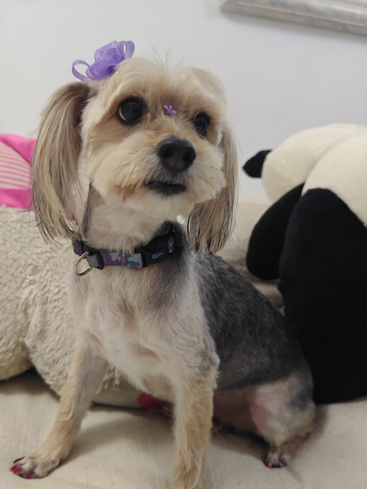
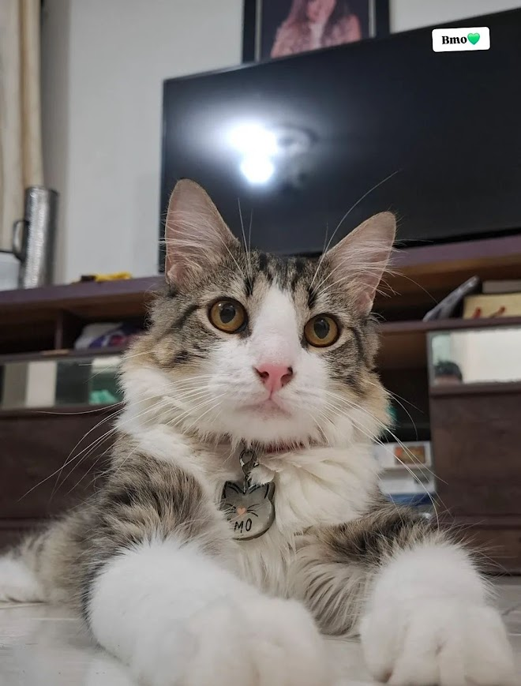

Amatista
Una criollita muy activa que le gusta mucho interactuar con las personas pero es mas retraida con los perros, una consentida.

Una criollita muy activa que le gusta mucho interactuar con las personas pero es mas retraida con los perros, una consentida.

Un gatito curioso, intenso y muy dañino, le encanta estar durmiendo y comiendo.

Una Chowchow muy consentida y escandalosa le encanta escaparse todo el tiempo y que le esten prestando atencion.